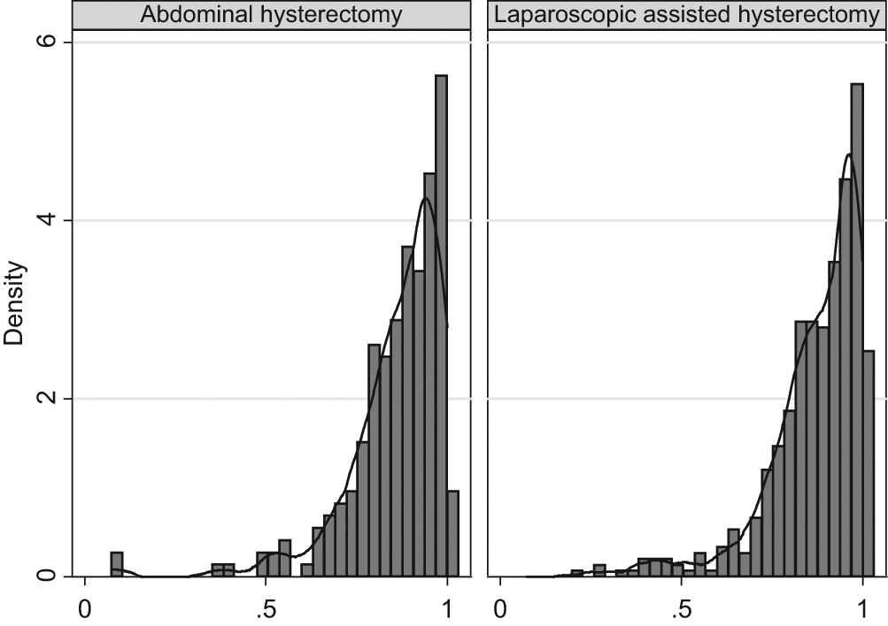
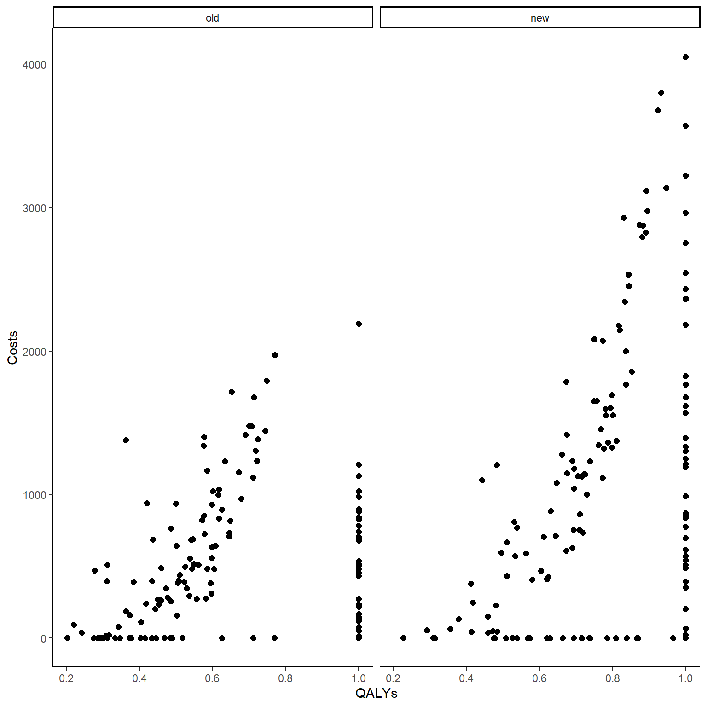
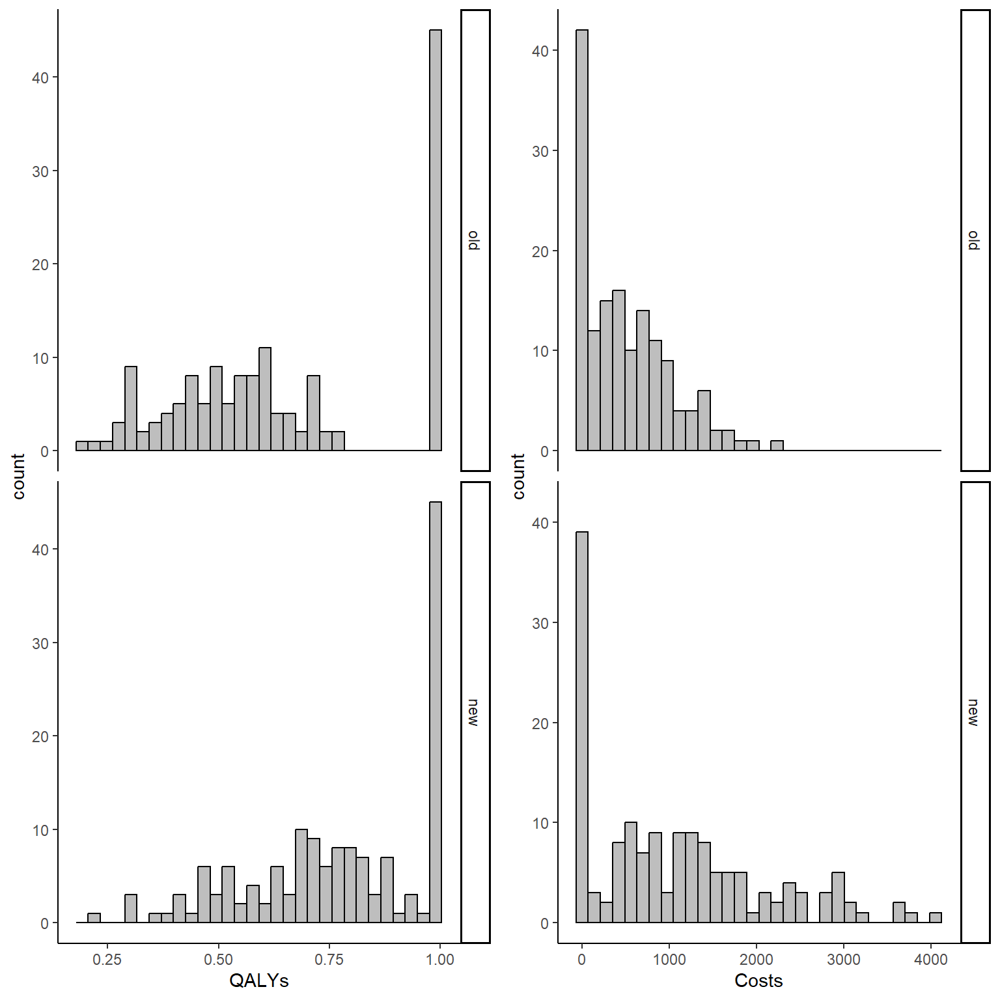

![]()
set.seed(768)
n <- 300
id <- seq(1:n)
trt <- c(rep(0, n/2),rep(1, n/2))
mean_e1 <- c(0.5)
mean_e2 <- c(0.7)
sigma_e <- 0.15
tau1_e <- ((mean_e1*(1-mean_e1))/(sigma_e^2)-1)
tau2_e <- ((mean_e2*(1-mean_e2))/(sigma_e^2)-1)
alpha1_beta <- tau1_e*mean_e1
beta1_beta <- tau1_e*(1-mean_e1)
alpha2_beta <- tau2_e*mean_e2
beta2_beta <- tau2_e*(1-mean_e2)
e1 <- rbeta(n/2, alpha1_beta, beta1_beta)
e2 <- rbeta(n/2, alpha2_beta, beta2_beta)
mean_c1 <- 500
mean_c2 <- 1000
sigma_c <- 300
tau1_c <- mean_c1/(sigma_c^2)
tau2_c <- mean_c2/(sigma_c^2)
ln.mean_c1 <- log(500) + 5*(e1-mean(e1))
c1 <- rgamma(n/2, (exp(ln.mean_c1)/sigma_c)^2, exp(ln.mean_c1)/(sigma_c^2))
ln.mean_c2 <- log(1000) + 5*(e2-mean(e2)) + rgamma(n/2,0,tau2_c)
c2 <- rgamma(n/2, (exp(ln.mean_c2)/sigma_c)^2, exp(ln.mean_c2)/(sigma_c^2))
QALYs <- c(e1,e2)
Costs <- c(c1,c2)
p_zeros <- 0.25
d_zeros <- rbinom(n, 1, p_zeros)
p_ones <- 0.25
d_ones <- rbinom(n, 1, p_ones)
QALYs <- ifelse(d_ones==1,1,QALYs)
Costs <- ifelse(d_zeros==1,0,Costs)
data_sim_ec <- data.frame(id, trt, QALYs, Costs, d_zeros, d_ones)
data_sim_ec <- data_sim_ec[sample(1:nrow(data_sim_ec)), ]Structural values in health economics data
Quarto
R
Academia
health economics

Hello everybody and welcome to my second post of the year. I try to be as consistent as possible with these monthly updates as I would like to keep my blog alive and hopefully post something interesting for somebody involved in data analysis tasks. So, continuing the thread of the past posts, I would like today to deal with a common problem affecting health economics outcome data (e.g. QALYs and Total costs), especially in the context of trial-based cost-effectiveness analysis. The last few times we saw why statistical idiosyncrasies, such as correlation and skewness, represent a possible issue when modelling the data and require the adoption of specific methods to deal with them. Today we take a step further and look at a specific problem which often occurs with individual health economics data: the presence of structural values for the outcome variables, i.e. there is some ceiling effects at one of the boundary of the observed data distributions.
Typical examples of such values are people associated with zero total costs or one QALY (perfect health status) which are located at the boundaries of the range of possible values that such variables may take, namely lower bound for costs and upper bound for QALYs. When the proportions of the individuals associated with these specific values is small, then hey typically do not cause large problems in that they can be simply treated as other values (e.g. using Normal distributions) or some simple tricks can be implemented to ensure they do not cause an issue when fitting the model (e.g. add/subtract small constant to all individual outcomes to ensure the fitting of alternative parametric distributions). However, it is often the case that the proportions of individuals associated with these values is considerable (e.g. above \(20-30\%\)), therefore implying the existence in the data of a “subset” of cases that have clearly distinct outcome values from all the others. They can then be defined as “structural” in the sense that they relate to specific sub-population conditions (e.g. those in perfect health or experiencing no costs) that are clearly different form the others and whose typical characteristics need to be properly recognised and taken into account at the modelling stage of the analysis (they cannot be treated as the others!).
Today we will see some examples of these structural values and possible ways to deal with them, although I have to say that in current practice they are rarely addressed via appropriate methods and are instead often treated as other individuals in the samples. For example, let’s reproduce the example in the previous post by simulating some non-Normal bivariate cost and QALY data for a total of \(300\) patients assigned to two competing intervention groups (\(t=0,1\)). When generating the data, we can try to mimic the typical skewness features of the outcome data by using alternative distributions such as Gamma for costs and Beta for QALYs. However, in contrast to what done before, we now also generate indicator variables that are used in order to determine which individuals should be assigned “structural values”, namely zero costs and one QALYs. The proportions of individuals assigned to these values is obtained by setting the probability of the Bernoulli distribution used to create the indicators.
In the code above, after simulating QALY and Cost data using Beta and Gamma distribution, indicator variables for the zero and one values were generated for each individual in the sample from a Bernoulli distribution. Whenever the indicator takes value 1, it denotes the presence of a structural value and the corresponding outcome value is then set equal to zero (Costs) or one (QALYs). We can now compute the correlation between variables and plot the two outcome variables against each other to show how the presence of these structural values affect their corresponding association pattern.
#empirical correlation between e and c (across groups)
cor(data_sim_ec$QALYs,data_sim_ec$Costs)[1] 0.3582116#scatterplot of e and c data by group
library(ggplot2)
data_sim_ec$trtf <- factor(data_sim_ec$trt)
levels(data_sim_ec$trtf) <- c("old","new")
ggplot(data_sim_ec, aes(x=QALYs, y=Costs)) +
geom_point(size=2, shape=16) + theme_classic() +
facet_wrap(~trtf)
In addition, we can also produce histograms of the distribution of the outcomes by treatment group to have a rough idea of the amount of structural values by type of outcome and treatment group in our sample.
data_sim_ec$trtf <- factor(data_sim_ec$trt)
levels(data_sim_ec$trtf) <- c("old","new")
QALY_hist <- ggplot(data_sim_ec, aes(x=QALYs))+
geom_histogram(color="black", fill="grey")+
facet_grid(trtf ~ .) + theme_classic()
Tcost_hist <- ggplot(data_sim_ec, aes(x=Costs))+
geom_histogram(color="black", fill="grey")+
facet_grid(trtf ~ .) + theme_classic()
gridExtra::grid.arrange(QALY_hist, Tcost_hist, nrow = 1, ncol = 2)
It is clear from the graphs above that the considerable proportions of these structural values in both outcomes cannot be simply ignored and must be addressed properly. When conducting the main analysis, two possible approaches can be used to deal with such situation without relying on Normality assumptions of standard methods:
- Simply add/subtract some small constant (e.g. \(0.001\)) to all individuals in the sample to ensure that no zero or one values occur, therefore allowing the implementation of methods relying on alternative parametric distributions (e.g. Gamma or Beta regression) that are not defined at such values. Although very simple and easy to implement, this method is a sort of a “trick” which is used in order to dodge the problem of these values therefore not recognising their systematic difference with respect to all other individuals in the sample. It is usually reasonable to use only when the proportion of such values is small, thus likely not affecting the overall conclusions of the analysis (i.e. estimate of mean difference in the outcomes between groups). In
Rwe can do this using the following commands:
data_sim_ec$QALYs_new <- data_sim_ec$QALYs - 0.001
data_sim_ec$Costs_new <- data_sim_ec$Costs + 0.001
library(betareg)
model_qaly_new <- betareg(QALYs_new ~ trtf, data = data_sim_ec, link = c("log"))
summary(model_qaly_new)
Call:
betareg(formula = QALYs_new ~ trtf, data = data_sim_ec, link = c("log"))
Standardized weighted residuals 2:
Min 1Q Median 3Q Max
-1.2361 -0.7496 -0.5277 1.3470 1.7154
Coefficients (mean model with log link):
Estimate Std. Error z value Pr(>|z|)
(Intercept) -0.30589 0.02674 -11.438 <2e-16 ***
trtfnew 0.05196 0.03219 1.614 0.106
Phi coefficients (precision model with identity link):
Estimate Std. Error z value Pr(>|z|)
(phi) 1.601 0.124 12.9 <2e-16 ***
---
Signif. codes: 0 '***' 0.001 '**' 0.01 '*' 0.05 '.' 0.1 ' ' 1
Type of estimator: ML (maximum likelihood)
Log-likelihood: 230 on 3 Df
Pseudo R-squared: 0.07084
Number of iterations: 14 (BFGS) + 1 (Fisher scoring) exp(coef(model_qaly_new))[1:2](Intercept) trtfnew
0.7364712 1.0533356 confint(model_qaly_new)[1:2,1:2] 2.5 % 97.5 %
(Intercept) -0.35829941 -0.2534708
trtfnew -0.01113072 0.1150545exp(confint(model_qaly_new))[1:2,1:2] 2.5 % 97.5 %
(Intercept) 0.6988638 0.7761024
trtfnew 0.9889310 1.1219346model_tcost_new <- glm(Costs_new ~ trtf, data = data_sim_ec, family = Gamma(link="log"))
summary(model_tcost_new)
Call:
glm(formula = Costs_new ~ trtf, family = Gamma(link = "log"),
data = data_sim_ec)
Coefficients:
Estimate Std. Error t value Pr(>|t|)
(Intercept) 6.23102 0.07826 79.622 < 2e-16 ***
trtfnew 0.74653 0.11067 6.745 7.93e-11 ***
---
Signif. codes: 0 '***' 0.001 '**' 0.01 '*' 0.05 '.' 0.1 ' ' 1
(Dispersion parameter for Gamma family taken to be 0.9186255)
Null deviance: 1876.3 on 299 degrees of freedom
Residual deviance: 1835.4 on 298 degrees of freedom
AIC: 3751.2
Number of Fisher Scoring iterations: 25exp(coef(model_tcost_new))[1:2](Intercept) trtfnew
508.272377 2.109675 confint(model_tcost_new)[1:2,1:2] 2.5 % 97.5 %
(Intercept) 6.0814632 6.3884275
trtfnew 0.5294067 0.9636612exp(confint(model_tcost_new))[1:2,1:2] 2.5 % 97.5 %
(Intercept) 437.669122 594.920319
trtfnew 1.697925 2.621276The code above proceeds to fist add/subtract the small constant to all outcome values, followed by fitting a Beta regression and a Gamma regression models with logarithmic link function (for the mean) to estimate the main treatment effect of interest for the two outcomes, namely mean total costs and QALYs difference between groups (converted on the original scale using the exponential function and with related \(95\%\)CI). In the Beta regression output, an estimate for the parameters \(\phi\) is also provided as this precision parameter (\(\text{variance}=\mu(1-\mu)/(1-\phi)\)) is linked to the mean and variance of the distribution and must be estimated. However, its interpretation is not usually of interest and is mostly provided in order to check for potential estimation problems in case the Beta distribution has a poor fit to the data. 2. Properly account for the existence of the structural values by fitting two separate models for the structural and non-structural component in the data, also referred to two-part regression models. The idea is to separate the two sets of observations: fit standard non-Normal distributions to the non-structural values (to handle skewness) and; fit logistic regression models using as outcomes the indicators for the structural values for each outcome type. The first type of models will provide an estimate for the treatment effect (mean Cost and QALY difference between groups) among the non-structural components of the data (\(\Delta^e_{ns}, \Delta^c_{ns}\)), while the second type of models will provide estimates for the proportions of structural zeros/ones (\(\pi^e,\pi^c\)). As a final step, it is possible to combine the results from the two types of models in order to obtain an overall estimate of treatment effect which takes into account the presence of the structural values. This is achieved for the QALY analysis by computing:
\[ \Delta^e = \Delta^e_{ns}\times(1-\pi^e), \]
that is the overall mean QALY difference between groups \(\Delta^e\) will be equal to the product of the mean difference among the non-structural component \(\Delta^e_{ns}\) and the probability of having non-structural values \((1-\pi^e)\). Note that here we assume that the proportion of structural values \(\pi^e\) is estimated across groups but in theory also a different estimate per group can be obtained, for example by including treatment as a predictor in the logistic regression model. In such case, then also the difference between \(\pi^e\) in the two groups should also be incuded in the above formula to derive the overall estimate of \(\Delta^e\).
Similarly for costs, we can do:
\[ \Delta^c = \Delta^c_{ns}\times(1-\pi^c), \]
that is the overall mean Cost difference between groups \(\Delta^c\) will be equal to the product of the mean difference among the non-structural component \(\Delta^c_{ns}\) and the probability of having non-structural values \((1-\pi^c)\).
In R we can fit these models as follows:
data_sim_e_ns <- data_sim_ec[data_sim_ec$QALYs<1,]
data_sim_c_ns <- data_sim_ec[data_sim_ec$Costs>0,]
model_qaly_ns <- betareg(QALYs ~ trtf, data = data_sim_e_ns, link = c("log"))
summary(model_qaly_ns)
Call:
betareg(formula = QALYs ~ trtf, data = data_sim_e_ns, link = c("log"))
Standardized weighted residuals 2:
Min 1Q Median 3Q Max
-2.7512 -0.7313 0.0488 0.6366 3.3486
Coefficients (mean model with log link):
Estimate Std. Error z value Pr(>|z|)
(Intercept) -0.67733 0.02977 -22.75 < 2e-16 ***
trtfnew 0.28786 0.03625 7.94 2.02e-15 ***
Phi coefficients (precision model with identity link):
Estimate Std. Error z value Pr(>|z|)
(phi) 9.3358 0.8696 10.73 <2e-16 ***
---
Signif. codes: 0 '***' 0.001 '**' 0.01 '*' 0.05 '.' 0.1 ' ' 1
Type of estimator: ML (maximum likelihood)
Log-likelihood: 104.3 on 3 Df
Pseudo R-squared: 0.1959
Number of iterations: 8 (BFGS) + 2 (Fisher scoring) exp(coef(model_qaly_ns))[1:2](Intercept) trtfnew
0.5079699 1.3335700 confint(model_qaly_ns)[1:2,1:2] 2.5 % 97.5 %
(Intercept) -0.7356872 -0.6189791
trtfnew 0.2168019 0.3589171exp(confint(model_qaly_ns))[1:2,1:2] 2.5 % 97.5 %
(Intercept) 0.4791761 0.5384939
trtfnew 1.2420981 1.4317781mue_ns <- exp(coef(model_qaly_ns))[2]
library(boot)
model_qaly_ones <- glm(d_ones ~ 1, data = data_sim_ec, family = binomial(link = logit))
summary(model_qaly_ones)
Call:
glm(formula = d_ones ~ 1, family = binomial(link = logit), data = data_sim_ec)
Coefficients:
Estimate Std. Error z value Pr(>|z|)
(Intercept) -0.8473 0.1260 -6.725 1.75e-11 ***
---
Signif. codes: 0 '***' 0.001 '**' 0.01 '*' 0.05 '.' 0.1 ' ' 1
(Dispersion parameter for binomial family taken to be 1)
Null deviance: 366.52 on 299 degrees of freedom
Residual deviance: 366.52 on 299 degrees of freedom
AIC: 368.52
Number of Fisher Scoring iterations: 4pe_ones <- inv.logit(coef(model_qaly_ones))
mue_all <- mue_ns*(1-pe_ones)
model_tcost_ns <- glm(Costs ~ trtf, data = data_sim_c_ns, family = Gamma(link="log"))
summary(model_tcost_ns)
Call:
glm(formula = Costs ~ trtf, family = Gamma(link = "log"), data = data_sim_c_ns)
Coefficients:
Estimate Std. Error t value Pr(>|t|)
(Intercept) 6.47948 0.06673 97.106 < 2e-16 ***
trtfnew 0.71292 0.09358 7.618 6.2e-13 ***
---
Signif. codes: 0 '***' 0.001 '**' 0.01 '*' 0.05 '.' 0.1 ' ' 1
(Dispersion parameter for Gamma family taken to be 0.5209232)
Null deviance: 367.57 on 237 degrees of freedom
Residual deviance: 338.07 on 236 degrees of freedom
AIC: 3737.3
Number of Fisher Scoring iterations: 6exp(coef(model_tcost_ns))[1:2](Intercept) trtfnew
651.629970 2.039936 confint(model_tcost_ns)[1:2,1:2] 2.5 % 97.5 %
(Intercept) 6.3514894 6.6131753
trtfnew 0.5292785 0.8963693exp(confint(model_tcost_ns))[1:2,1:2] 2.5 % 97.5 %
(Intercept) 573.346008 744.844382
trtfnew 1.697707 2.450689muc_ns <- exp(coef(model_tcost_ns))[2]
model_tcost_zeros <- glm(d_zeros ~ 1, data = data_sim_ec, family = binomial(link = logit))
summary(model_tcost_zeros)
Call:
glm(formula = d_zeros ~ 1, family = binomial(link = logit), data = data_sim_ec)
Coefficients:
Estimate Std. Error z value Pr(>|z|)
(Intercept) -1.3451 0.1426 -9.434 <2e-16 ***
---
Signif. codes: 0 '***' 0.001 '**' 0.01 '*' 0.05 '.' 0.1 ' ' 1
(Dispersion parameter for binomial family taken to be 1)
Null deviance: 305.7 on 299 degrees of freedom
Residual deviance: 305.7 on 299 degrees of freedom
AIC: 307.7
Number of Fisher Scoring iterations: 4pc_zeros <- exp(coef(model_tcost_zeros))
muc_all <- muc_ns*(1-pc_zeros)It is clear how, although this approach allows to take into account for the structural component of the data, it suffers from practical limitations: the non-structural regression models are effectively fitted to a smaller sample compared to the original one since all individuals with structural values are removed from the analysis and are only used to estimate the proportion of values in the second step. In case there is a considerable mismatch between the individuals with structural ones and zeros in the data, then the validity of the estimates for the non-structural components may become questionable, e.g. if the sample size becomes too small. In addition, standard regression output such as p-values, CIs or other summary statistics obtained from the non-structural regression are only applicable to the specific subset of non-structural values and it is generally difficult to derive similar estimates for the overall mean difference (only point estimate). This last limitation can be overcome by nesting the two-part procedure within a bootstrap method, therefore re-fitting the models to a series of bootstrap samples sampled with replacement from the original sample a large number of times so to obtain at the end a distribution of values for the overall treatment effect, which can then be used to generate standard CEA output, e.g. CEAC, CEP, CIs based on percentile method, etc …
Regardless of the approach used, I believe it is important to account for ceiling effects in the data if the structural values are present in a substantial way. Simply ignoring the presence of structural values can be very dangerous in that these values suggest how these people are systematically different from the others with respect to their outcomes and should therefore be treated differently form all the others in the analysis stage. When only a few values are present, then simply adding/subtracting some constant values may be sufficient. However, when the proportion of such values becomes considerable, more advanced approaches should be pursued to deal with them. The typical problem is that such values occur in combination with other complexities that characterise the data, e.g. skewness, making even more important to use methods that are tailored to address multiple data idiosyncrasies at the same time. In future posts we will see how the existence of these complex features in HE data make the use of standard frequentist methods often difficult and instead favour the use of more flexible Bayesian approaches as more suited to model and quantify uncertainty associated with CEAs.